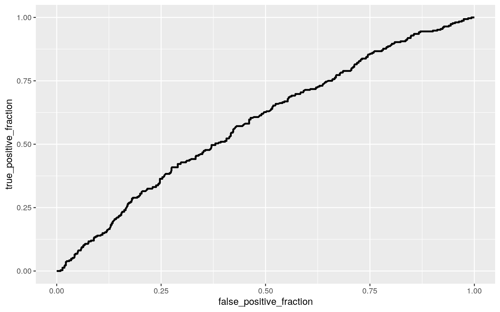

November 22, 2020
Introduction
The Birth Weight dataset examines various attributes of mothers and their new born infants. It contains 7 variables: the infant's birth weight in ounces, the infant's gestation period in days, the infant's parity (first born = 1, later birth = 0), the mother's age in years, mother's height in inches, mother's weight in pounds, and whether the mother smokes (1=yes, 0=no). The dataset contains 1174 observations. The data was originally acquired from the Child Health and Development Studies conducted at the Kaiser Foundation Hospital on Oakland, California. I am interested in my dataset because I am currently working on a certificate in Social Inequality, Health, and Policy. In my Health Inequality in Childhood and Adolescence class, I wrote a research paper examining high rates of infant mortality in the United states, and its association with low birth weight. Low birth weight in turn is associate with poor health habits, such as smoking. I am interested in using the Birth Weight dataset to possibly observe various relationships between attributes of mothers and their new born infants.

I ran the dataset below:
Bwtdata <- read_csv("http://people.reed.edu/~jones/141/Bwt.dat")
Bwtdata$smoke <- as.character(Bwtdata$smoke)
head(Bwtdata)## # A tibble: 6 x 7
## bwt gestation parity age height weight smoke
## <dbl> <dbl> <dbl> <dbl> <dbl> <dbl> <chr>
## 1 120 284 0 27 62 100 0
## 2 113 282 0 33 64 135 0
## 3 128 279 0 28 64 115 1
## 4 108 282 0 23 67 125 1
## 5 136 286 0 25 62 93 0
## 6 138 244 0 33 62 178 0MANOVA Testing
MANOVA Assumptions
library(rstatix)
group <- Bwtdata$smoke
DVs <- Bwtdata%>% select(bwt,gestation,age, height, weight)
sapply(split(DVs,group), mshapiro_test)## 0 1
## statistic 0.901781 0.9733173
## p.value 5.24202e-21 1.983177e-07The MANOVA assumption that the sample was random and contains independent observations was likely met in research and data collection. The assumption for multivariate normality for each group was not met because the p values were less than the alpha, 0.05. This means the null hypothesis that assumptions were met is rejected. Since the assumption was not met, the Box's M test for homogeneity of co-variance was not performed. Despite the assumption being violated, the MANOVA test will be performed.
The MANOVA Test
man1<-manova(cbind(bwt,gestation,age, height, weight)~smoke, data=Bwtdata)
summary(man1)## Df Pillai approx F num Df den Df Pr(>F)
## smoke 1 0.073087 18.419 5 1168 < 2.2e-16 ***
## Residuals 1172
## ---
## Signif. codes: 0 '***' 0.001 '**' 0.01 '*' 0.05 '.' 0.1
' ' 1summary.aov(man1)## Response bwt :
## Df Sum Sq Mean Sq F value Pr(>F)
## smoke 1 24002 24002.1 76.017 < 2.2e-16 ***
## Residuals 1172 370056 315.7
## ---
## Signif. codes: 0 '***' 0.001 '**' 0.01 '*' 0.05 '.' 0.1
' ' 1
##
## Response gestation :
## Df Sum Sq Mean Sq F value Pr(>F)
## smoke 1 1092 1092.08 4.2723 0.03896 *
## Residuals 1172 299583 255.62
## ---
## Signif. codes: 0 '***' 0.001 '**' 0.01 '*' 0.05 '.' 0.1
' ' 1
##
## Response age :
## Df Sum Sq Mean Sq F value Pr(>F)
## smoke 1 182 182.356 5.4079 0.02022 *
## Residuals 1172 39520 33.721
## ---
## Signif. codes: 0 '***' 0.001 '**' 0.01 '*' 0.05 '.' 0.1
' ' 1
##
## Response height :
## Df Sum Sq Mean Sq F value Pr(>F)
## smoke 1 2.3 2.2941 0.3593 0.549
## Residuals 1172 7482.8 6.3847
##
## Response weight :
## Df Sum Sq Mean Sq F value Pr(>F)
## smoke 1 1832 1832.49 4.2744 0.03891 *
## Residuals 1172 502452 428.71
## ---
## Signif. codes: 0 '***' 0.001 '**' 0.01 '*' 0.05 '.' 0.1
' ' 1pairwise.t.test(Bwtdata$bwt,Bwtdata$smoke, p.adj="none")##
## Pairwise comparisons using t tests with pooled SD
##
## data: Bwtdata$bwt and Bwtdata$smoke
##
## 0
## 1 <2e-16
##
## P value adjustment method: nonepairwise.t.test(Bwtdata$gestation,Bwtdata$smoke, p.adj="none")##
## Pairwise comparisons using t tests with pooled SD
##
## data: Bwtdata$gestation and Bwtdata$smoke
##
## 0
## 1 0.039
##
## P value adjustment method: nonepairwise.t.test(Bwtdata$age,Bwtdata$smoke, p.adj="none")##
## Pairwise comparisons using t tests with pooled SD
##
## data: Bwtdata$age and Bwtdata$smoke
##
## 0
## 1 0.02
##
## P value adjustment method: nonepairwise.t.test(Bwtdata$weight,Bwtdata$smoke, p.adj="none")##
## Pairwise comparisons using t tests with pooled SD
##
## data: Bwtdata$weight and Bwtdata$smoke
##
## 0
## 1 0.039
##
## P value adjustment method: none1-0.95^10 ## Type I Error## [1] 0.40126310.05/10 ## Bonferroni Correction## [1] 0.005The MANOVA test indicates that there is a numeric variable that shows a mean difference across levels of my categorical variable, smoke. Performing uni-variate ANOVAs the responses showing a mean difference across groups are birth weight, gestation, age, and mother's weight before adjusting the p value using bonferroni correction. After, I performed the post-hoc t tests conducting pairwise comparisons to determine if the two groups, smoking and nonsmoking, differ in birth weight, gestation, age, and mother's weight. There were 10 tests performed, 1 manova, 5 anova, and 4 pairwise test so far. The calculated probability of at least one type I error is 0.4012631. Adjusting the significance level accordingly using bonferroni correction, the new alpha of 0.005. Both groups were found to differ significantly from each other only in terms of birth weight, after adjusting for multiple comparisons.
Randomization Test (Mean Difference)
set.seed(1234)
BwtdataRand<- Bwtdata%>%select(bwt, smoke)
head(BwtdataRand)## # A tibble: 6 x 2
## bwt smoke
## <dbl> <chr>
## 1 120 0
## 2 113 0
## 3 128 1
## 4 108 1
## 5 136 0
## 6 138 0BwtdataRand%>%group_by(smoke)%>%
summarize(means=mean(bwt))%>%summarize(`mean_diff`=diff(means))## # A tibble: 1 x 1
## mean_diff
## <dbl>
## 1 -9.27rand_dist<-vector()
for(i in 1:5000){
new<-data.frame(bwt=sample(BwtdataRand$bwt),smoke=BwtdataRand$smoke)
rand_dist[i]<-mean(new[new$smoke=="0",]$bwt)-
mean(new[new$smoke=="1",]$bwt)}
mean(rand_dist>-9.266143 | rand_dist < 9.266143 ) ## [1] 1{hist(rand_dist,main="",ylab="", xlim=c(-10, 10)); abline(v = c(-9.266143, 9.266143),col="red")}I performed a randomization test, and I chose the test statistic to be mean difference because I will be using a numeric and a categorical variable, infant birth weight and whether the mother smokes. The null hypothesis states that the mean infant birth weight is the same for smokers and nonsmokers. The alternative hypothesis states that the mean infant birth weight is different for smokers and nonsmokers. After performing the test, the pvalue came out to 1, which is greater than the alpha of 0.05, so I fail to reject the null hypothesis. Looking at the null distribution and the test statistic using a two tailed test, the histogram confirms the results. There is no significant association between the group the mother was in, smoking vs non smoking, and the response variable, the birth weight of the infant.
Linear Regression
The Linear Regression
library(sandwich); library(lmtest)
Bwtdata$gestation_c<-Bwtdata$gestation-mean(Bwtdata$gestation)
Bwtfit1<-lm(bwt~smoke*gestation_c, data = Bwtdata)
summary(Bwtfit1)##
## Call:
## lm(formula = bwt ~ smoke * gestation_c, data = Bwtdata)
##
## Residuals:
## Min 1Q Median 3Q Max
## -51.023 -11.078 -0.084 9.995 50.499
##
## Coefficients:
## Estimate Std. Error t value Pr(>|t|)
## (Intercept) 122.79969 0.60490 203.007 < 2e-16 ***
## smoke1 -8.25771 0.96862 -8.525 < 2e-16 ***
## gestation_c 0.36962 0.03671 10.069 < 2e-16 ***
## smoke1:gestation_c 0.23085 0.06176 3.738 0.000194 ***
## ---
## Signif. codes: 0 '***' 0.001 '**' 0.01 '*' 0.05 '.' 0.1
' ' 1
##
## Residual standard error: 16.16 on 1170 degrees of
freedom
## Multiple R-squared: 0.2249, Adjusted R-squared: 0.2229
## F-statistic: 113.2 on 3 and 1170 DF, p-value: < 2.2e-16The coefficient estimate for smoke, observing the relationship between infant birth weight whether the mother smokes, tells us that smoking mothers with average gestation period have predicted infant birth weight that is 8.25771 lower than non smoking mothers with average gestation period. The coefficient estimate for gestation_c, observing the relationship between infant birth weight and infant gestation period, tells us that for every one unit increase in infant's gestation period, there is a predicted 0.36962 ounce increase in infant birth weight, on average. The coefficient estimate for weight_c:gestation_c, observing the relationship between infant birth weight the interaction between mother's smoking status and infant gestation period, tells us that the slope of gestation on infant birth weight for smoking mothers is 0.23085 greater than for non smoking mothers. The intercept is a representation of when the smoking conditions is non-smoking mother and gestation is zero, the birth weight in ounces is 122.79969 on average.
Regression Plot
The plot of the linear regression.
Bwtdata%>%ggplot(aes(gestation_c, bwt, color = smoke)) + geom_point(aes(color=smoke)) + geom_smooth(method = "lm")Assumptions
Then, I checked assumptions of linearity, normality, and homoskedasticity graphically and confirmed the results using the Shapiro-Wilk and the Breusch-Pagan tests. The linearity and homosekedaticity assumption were not met. However, the normality assumption has been met.
resids<-Bwtfit1$residuals
fitvals<-Bwtfit1$fitted.values
ggplot()+ geom_point(aes(fitvals,resids))+geom_hline(yintercept=0, color='red')ggplot()+geom_histogram(aes(resids),bins=10)shapiro.test(resids)##
## Shapiro-Wilk normality test
##
## data: resids
## W = 0.99759, p-value = 0.08017bptest(Bwtfit1) ##
## studentized Breusch-Pagan test
##
## data: Bwtfit1
## BP = 8.5485, df = 3, p-value = 0.03594Linear Regression with Robust SEs and Proportions
coeftest(Bwtfit1, vcov=vcovHC(Bwtfit1))##
## t test of coefficients:
##
## Estimate Std. Error t value Pr(>|t|)
## (Intercept) 122.799690 0.618955 198.3984 < 2.2e-16 ***
## smoke1 -8.257707 0.973942 -8.4786 < 2.2e-16 ***
## gestation_c 0.369615 0.057596 6.4173 2.01e-10 ***
## smoke1:gestation_c 0.230846 0.079385 2.9079 0.003707 **
## ---
## Signif. codes: 0 '***' 0.001 '**' 0.01 '*' 0.05 '.' 0.1
' ' 1summary(Bwtfit1)$r.sq## [1] 0.2249173Regardless of the violated assumptions, I recompute the regression results with robust standard errors. The results showed a change in my standard errors. However, there were no significant changes in my results from before the robust SEs. The significant results remained significant. The proportion of the variation in the outcome that my model explains is R^2, 0.2249173.
Bootstrapped SEs
set.seed(1234)
samp_distn<-replicate(5000, {
Bwtfit1boot <- sample_frac(Bwtdata, replace=T)
fit <- lm(bwt~gestation_c*smoke, data=Bwtfit1boot)
coef(fit)
})
samp_distn %>% t %>% as.data.frame %>% summarize_all(sd)## (Intercept) gestation_c smoke1 gestation_c:smoke1
## 1 0.6159093 0.05521765 0.9737932 0.07695344samp_distn %>% t %>% as.data.frame %>% pivot_longer(1:4) %>% group_by(name) %>% summarize(lower=quantile(value,.025), upper=quantile(value,.975))## # A tibble: 4 x 3
## name lower upper
## <chr> <dbl> <dbl>
## 1 (Intercept) 122. 124.
## 2 gestation_c 0.273 0.487
## 3 gestation_c:smoke1 0.0769 0.376
## 4 smoke1 -10.2 -6.35There were changes observe in SEs compared to the original and the robust SEs. The bootstrapped SEs for smoke1, gestation_c, and gestation_c:smoke1 were in between the original SEs and the robust SEs. The Robust SEs contained the largest standard error values. However, the changes were small, and the values were quite similar. Using the 95 percent confidence interval, I used my bootstrapped SEs to test significance. The pvalues of the bootstrapped SEs for the coefficient estimates compared to the original SEs and the robust SEs are still significant because their confidence intervals did not include zero.
Logistic Regression Model
The Logistic Regression
Bwtfit2<-glm(parity~ bwt + gestation, data=Bwtdata,family=binomial(link="logit"))
coeftest(Bwtfit2)##
## z test of coefficients:
##
## Estimate Std. Error z value Pr(>|z|)
## (Intercept) -4.5583994 1.2253985 -3.7199 0.0001993 ***
## bwt -0.0117507 0.0040673 -2.8891 0.0038639 **
## gestation 0.0175957 0.0047806 3.6807 0.0002326 ***
## ---
## Signif. codes: 0 '***' 0.001 '**' 0.01 '*' 0.05 '.' 0.1
' ' 1exp(coef(Bwtfit2))## (Intercept) bwt gestation
## 0.01047882 0.98831808 1.01775140The coefficient estimate for the intercept represents when birth weight and gestation are zero, the predicted odds of being first born is 0.01047882. The coefficient estimate for infant birth weight represents when infant birth weight increases by one unit the predicted odds for parity is multiplied by 0.98831808, when controlling for gestation. There is a significant, negative effect of infant birth weight on parity. The coefficient estimate for gestation represents when gestation increases by one unit the predicted odds for parity is multiplied by 1.01775140, when controlling for infant birth weight. There is a significant, positive effect of gestation on parity.
Confusion Matrix
Bwtdata$prob<-predict(Bwtfit2,type="response")
table(predict= as.numeric(Bwtdata$prob>0.5), truth = Bwtdata$parity) %>% addmargins()## truth
## predict 0 1 Sum
## 0 863 308 1171
## 1 3 0 3
## Sum 866 308 1174Accuracy, Sensitivity (TPR), Specificity (TNR), Precision (PPV), and AUC
class_diag<-function(probs,truth){
tab<-table(factor(probs>.5,levels=c("FALSE","TRUE")),truth)
acc=sum(diag(tab))/sum(tab)
sens=tab[2,2]/colSums(tab)[2]
spec=tab[1,1]/colSums(tab)[1]
ppv=tab[2,2]/rowSums(tab)[2]
f1=2*(sens*ppv)/(sens+ppv)
if(is.numeric(truth)==FALSE & is.logical(truth)==FALSE){
truth<-as.numeric(truth)-1}
#CALCULATE EXACT AUC
ord<-order(probs, decreasing=TRUE)
probs <- probs[ord]; truth <- truth[ord]
TPR=cumsum(truth)/max(1,sum(truth))
FPR=cumsum(!truth)/max(1,sum(!truth))
dup<-c(probs[-1]>=probs[-length(probs)], FALSE)
TPR<-c(0,TPR[!dup],1); FPR<-c(0,FPR[!dup],1)
n <- length(TPR)
auc<- sum( ((TPR[-1]+TPR[-n])/2) * (FPR[-1]-FPR[-n]) )
data.frame(acc,sens,spec,ppv,f1,auc)
}
class_diag(Bwtdata$prob, Bwtdata$parity)## acc sens spec ppv f1 auc
## 1 0.7350937 0 0.9965358 0 NaN 0.5865451The accuracy for the model is 0.7350937, which represents the proportion of all the correctly classified outcomes. The sensitivity for the model is zero which represents the proportion of first born outcomes that were correctly classified.The specificity for the model is 0.9965358, which represents the proportion of later born outcomes that were correctly classified. The precision for the model is 0, which represents the proportion of cases classified as first born that actually were first born. The AUC is 0.5865451. Based on AUC cutoffs, the model performance per AUC is in the "bad" range for predicting new data because it falls within the 0.5 to 0.6 cutoffs.
Density Plot
The density plot for the logistic regression.
Bwtdata$logit<-predict(Bwtfit2)
Bwtdata %>% mutate(outcome=factor(parity,levels=c("1","0"))) %>% ggplot(aes(logit, fill=outcome))+geom_density(alpha=.3)+
geom_vline(xintercept=0,lty=2)ROC Curve and AUC
library(plotROC)
ROCplot<-ggplot(Bwtdata)+geom_roc(aes(d=parity,m=prob), n.cuts=0)
ROCplot
calc_auc(ROCplot)## PANEL group AUC
## 1 1 -1 0.5865451The generated an ROC curve is seen above, plotting the true positive rate vs the false positive rate for all possible values of the cut off. The calculated AUC is 0.5865451. Based on AUC cutoffs, the model performance per AUC is in the "bad" range for predicting new data because it falls within the 0.5 to 0.6 cutoffs.
The Logistic Regression with All Variables
The Logistic Regression
Bwtfit3<-glm(parity~.,data=Bwtdata, family="binomial")
prob1 <- predict(Bwtfit3,type="response")
class_diag(prob1, Bwtdata$parity)## acc sens spec ppv f1 auc
## 1 0.7827939 0.3149351 0.9491917 0.6879433 0.4320713
0.762136table(predict=as.numeric(prob1>.5),truth=Bwtdata$parity)%>%addmargins## truth
## predict 0 1 Sum
## 0 822 211 1033
## 1 44 97 141
## Sum 866 308 1174The following are in-sample classification diagnostics. The accuracy for the model is 0.7827939, which represents the proportion of all the correctly classified outcomes. The sensitivity for the model is 0.3149351 which represents the proportion of first born outcomes that were correctly classified.The specificity for the model is 0.9491917, which represents the proportion of later born outcomes that were correctly classified. The precision for the model is 0.6879433, which represents the proportion of cases classified as first born that actually were first born. The AUC of the model is 0.762136. Based on AUC cutoffs, the model performance per AUC is in the "bad" range for predicting new data because it falls within the 0.5 to 0.6 cutoffs.
The Ten-Fold CV
set.seed(1234)
k=10
data<-Bwtdata[sample(nrow(Bwtdata)),]
folds<-cut(seq(1:nrow(data)),breaks=k,labels=F)
diags<-NULL
for(i in 1:k){
train<-data[folds!=i,]
test<-data[folds==i,]
truth<-test$parity
fit<-glm(parity~.,data=train, family="binomial")
probs<-predict(fit,newdata = test,type="response")
diags<-rbind(diags,class_diag(probs,truth))
}
summarize_all(diags,mean)## acc sens spec ppv f1 auc
## 1 0.7803057 0.3088004 0.9492348 0.6823474 0.4207738
0.7564367The following are average out-of-sample classification diagnostics. The accuracy for the model is 0.7803057. The sensitivity for the model is 0.3088004. The specificity for the model is 0.9492348. The precision for the model is 0.6823474. The AUC of the model is 0.7564367. Based on AUC cutoffs, the model performance per AUC is in the "fair" range for predicting new data because it falls within the 0.7 to 0.8 cutoffs. Compared to the in-sample metics, which had an AUC of 0.762136, the out of sample AUC of 0.7564367 has decreased. Though it is a notably worse predictor, it remains in the "fair" range.
LASSO
library(glmnet)
set.seed(1234)
Bwtdata_preds<-model.matrix(parity~.,data=Bwtdata)[,-1] #grab predictors
response <-as.matrix(Bwtdata$parity) #grab response
cv<-cv.glmnet(Bwtdata_preds,response,family="binomial")
lasso_fit<-glmnet(Bwtdata_preds,response,family="binomial",lambda=cv$lambda.1se)
coef(lasso_fit)## 10 x 1 sparse Matrix of class "dgCMatrix"
## s0
## (Intercept) 1.7886713
## bwt .
## gestation .
## age -0.1069858
## height .
## weight .
## smoke1 .
## gestation_c .
## prob .
## logit .probs<- predict(lasso_fit, Bwtdata_preds, type="response")
class_diag(probs,Bwtdata$parity)## acc sens spec ppv f1 auc
## 1 0.7385009 0.003246753 1 1 0.006472492 0.7444157I performed LASSO on the same model, choosing lambda to give the simplest model whose accuracy is near that of the best. The only variable that was retained was age because the coefficient estimate was the only non zero. The models AUC is 0.7444157. Based on AUC cutoffs, the model performance per AUC is in the "fair" range for predicting new data because it falls within the 0.7 to 0.8 cutoffs.
LASSO with LASSO Selected Variables
set.seed(1234)
k=10
data<-Bwtdata[sample(nrow(Bwtdata)),]
folds<-cut(seq(1:nrow(data)),breaks=k,labels=F)
diags<-NULL
for(i in 1:k){
train<-data[folds!=i,]
test<-data[folds==i,]
truth<-test$parity
fit<-glm(parity~age,data=train, family="binomial")
probs<-predict(fit,newdata = test,type="response")
diags<-rbind(diags,class_diag(probs,truth))
}
summarize_all(diags,mean)## acc sens spec ppv f1 auc
## 1 0.7666956 0.2560827 0.9508864 0.646746 0.3560506
0.7478875Lastly, I performed a ten-fold CV using only the variable lasso selected, age. The AUC of the model is 0.7478875. Based on AUC cutoffs, the model performance per AUC is in the "fair" range for predicting new data because it falls within the 0.7 to 0.8 cutoffs. The model's out-of-sample AUC of 0.7478875 compared to that of the original in-sample above, which has a AUC of 0.762136, has decreased. However, the AUC remains in the same cutoff range, as a "fair" predictor.
...